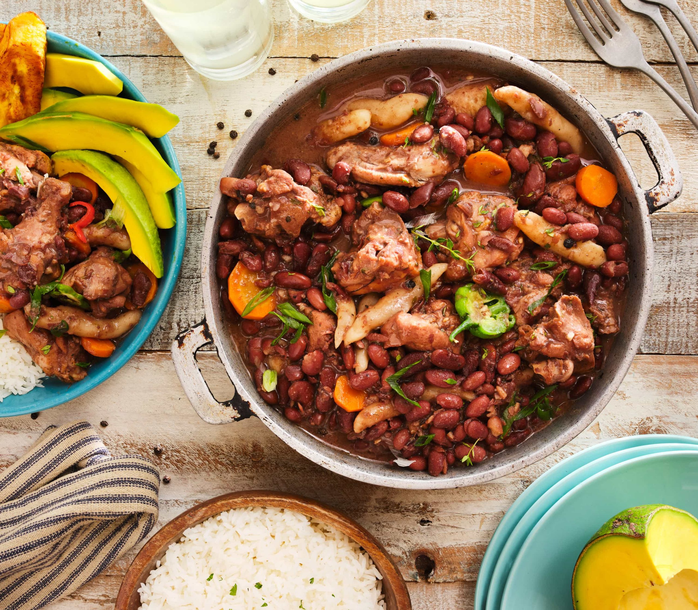

Stew Peas

Description
Stew Peas is a hearty Jamaican classic, brimming with tender red kidney
beans, salted meat, and rich coconut milk. Slow-cooked with spices, thyme,
and scotch bonnet pepper, it delivers a perfect balance of savory and
comforting flavors. Traditionally served with dumplings, rice, or bread,
this dish is a true taste of yaad and a staple at family tables across the
island
Prep time: 20m
Cooking tine: 45
Ingredients
- 2 lb cured pigtails
- 1–2 lb beef stew chunks
- 2 cups red peas (dried)
- 4 cups water
- 6 cloves garlic, minced
- 2 bay leaves
- 1 large onion, diced
- 1 tsp grated ginger
- 6 pimento seeds, whole
- Black peppercorns, ground
- 2–3 green Scotch bonnet peppers, whole
- 1 medium carrot, peeled and diced
- 2 tsp thyme leaves
- 1 stalk scallion, diced
- 1/2 green sweet/bell pepper, diced
- 1/2 cup coconut milk (optional)
Directions
-
Soak the pigtails overnight in a bowl of water in the refrigerator to
remove excess salt. Discard the water and set the pigtails aside. If
you’re short on time, place the pigtails in a pot half-filled with
water, boil for about 30 minutes, and discard the salted water.
-
Rinse the red peas to remove any residues and soak them in 2 cups of
water for about 30 minutes.
-
In a pressure cooker, combine the pigtails, beef, soaked peas with their
water, garlic, onion, and ginger. Add 4 more cups of water, seal the
cooker, and pressure cook for about 30 minutes, or until the meat and
peas are tender. Follow your pressure cooker’s instructions.
-
To thicken the stew, remove 1 cup of the cooked peas with a slotted
spoon and blend them with 1 cup of the stew liquid, coconut milk, and 1
tbsp corn starch until smooth.
-
Pour the blended mixture back into the pot and stir well. Add the diced
carrots and simmer over medium heat for about 5 minutes, until the gravy
thickens and the carrots are cooked.
-
Stir in the thyme leaves and sweet peppers, and simmer for another 3
minutes.
To serve
Serve hot over warm steamed white rice with a side of garden salad.
Home